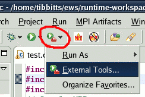
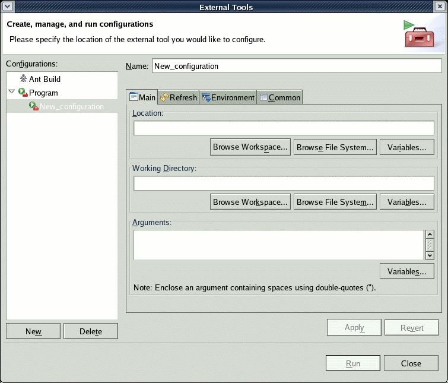
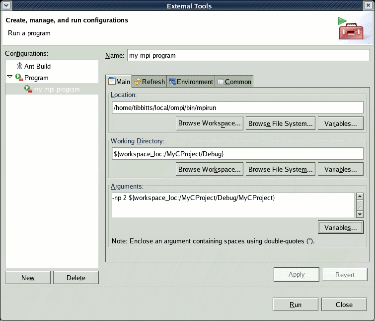
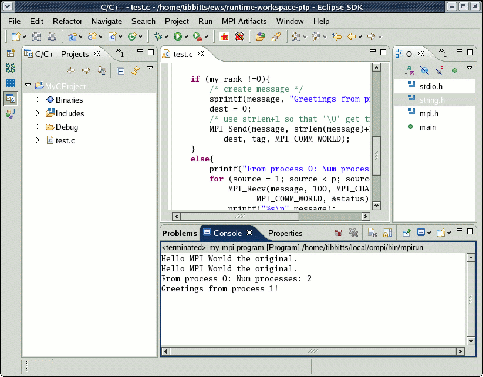

To run the program without using the PTP Runtime or PTP Debugger, you can launch the 'mpirun' invocation directly from eclipse.
Set up the launch configuration for launching the MPI program by configuring for "external tools." Under the External tools menu , select External Tools

In the External Tools dialog, under Configurations, select Program
and select the "New" button.

Fill in the information to run 'mpirun' for example.

Use the buttons to fill in variables that point to locations
within your eclipse project, as shown above.
Click the "Run" button to execute it.
Output will be shown in the console window.

mpirun (or mpiexec)
command in the C/C++ Application (or Application) field
mpirun (or mpiexec)
arguments and the name of the executable
Limitations of the old way:
Now proceed to launching your parallel program with the PTP Runtime Perspective. .